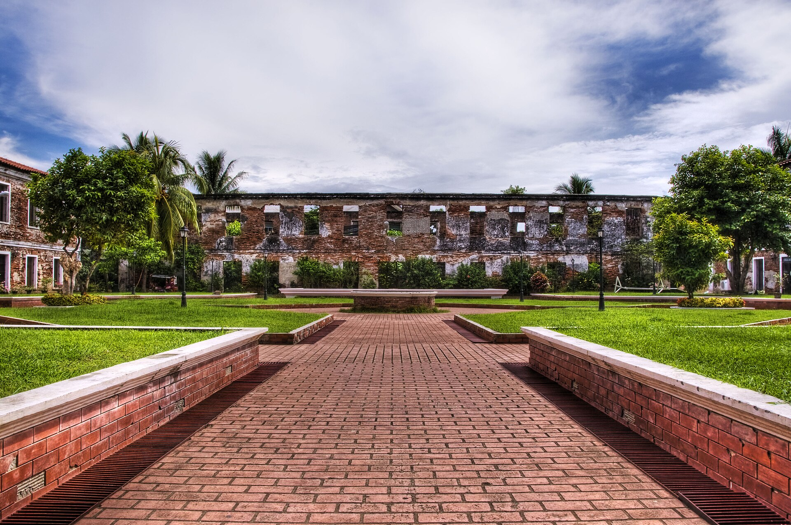
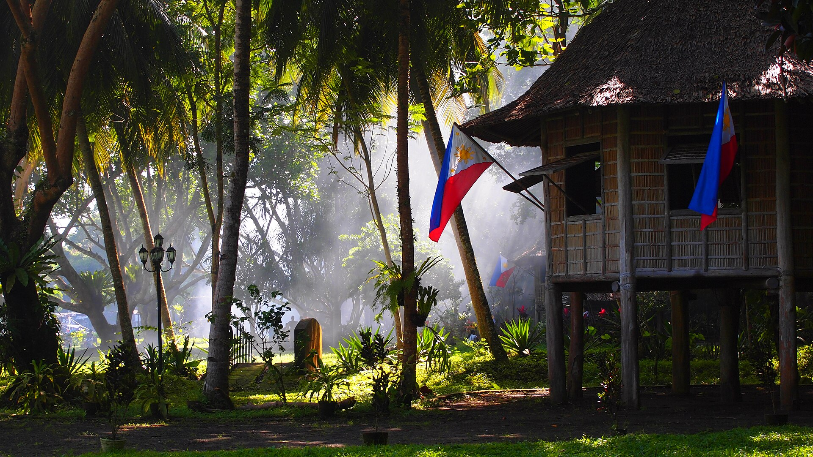
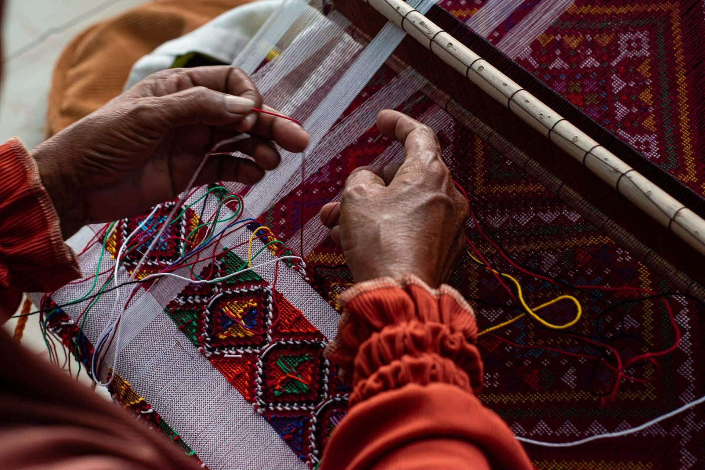

Zamboanga City
Great Santa Cruz Island
Famous for its blush-pink coralline sand and peaceful mangrove lagoon.
Read more →Western Mindanao · Philippines
Colorful cultures. Quiet shores. A different side of the Philippines.
Bienvenidos · Welcome
From the pink-tinged shores of Zamboanga City to the historic heritage of Dapitan, discover a region shaped by the sea, community, and living culture.
Learn about our history & culture →Zamboanga Peninsula (Region IX) is located in western Mindanao. It connects the provinces of Zamboanga del Norte, Zamboanga del Sur, and Zamboanga Sibugay with vibrant coastal cities and offshore islands.
Featured Video
Watch local weavers in Upper Calarian, Zamboanga City create traditional tennun textiles featuring intricate geometric patterns passed down through generations.
Explore more cultural activities →Featured Tourist Spots
Zamboanga City
Famous for its blush-pink coralline sand and peaceful mangrove lagoon.
Read more →
Zamboanga City
A 17th-century Spanish fortress housing the National Museum Zamboanga branch.
Read more →
Dapitan City · Zamboanga del Norte
Coastal national shrine preserving José Rizal’s 1892–1896 exile estate.
Read more →
Ipil · Zamboanga Sibugay
Scenic offshore island sanctuary known for calm waters and sunset views.
Read more →
Pagadian City · Zamboanga del Sur
Popular city plaza and gathering spot featuring an illuminated dancing fountain.
Read more →
Upper Calarian · Zamboanga City
Watch master weavers craft intricate geometric textiles by hand.
Explore activities →